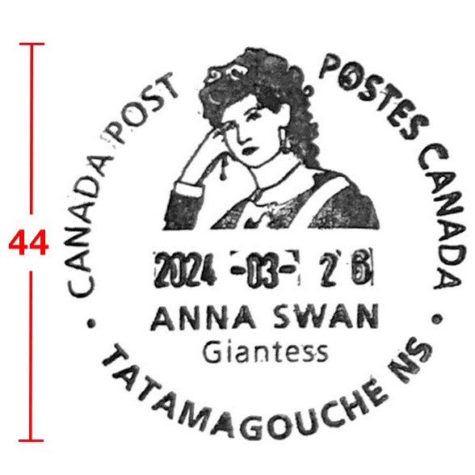

Tatamagouche PO pictorial cancel
ANNA SWAN – Giantess
- Status
- Active
- Run dates
- ? to present
- Design
- "ANNA SWAN / Giantess"; portrait of a lady
- Ink colour
- Black
- Designer
- Unknown
- Post office
- Tatamagouche PO
236 Main St
Tatamagouche, NS
B0K 1V0 - Subjects
- human, woman
Collect it by mail. Send your stamped covers, with a stamped return envelope, to the post office address above. How to collect pictorial cancels by mail · en français
 Tatamagouche POHaunted Canada
Tatamagouche POHaunted Canada Wenthworth POSki Wenthworth
Wenthworth POSki Wenthworth Maitland POHOME OF THE TIDAL BORE
Maitland POHOME OF THE TIDAL BORE Hopewell POHopewell Footbridge
Hopewell POHopewell Footbridge